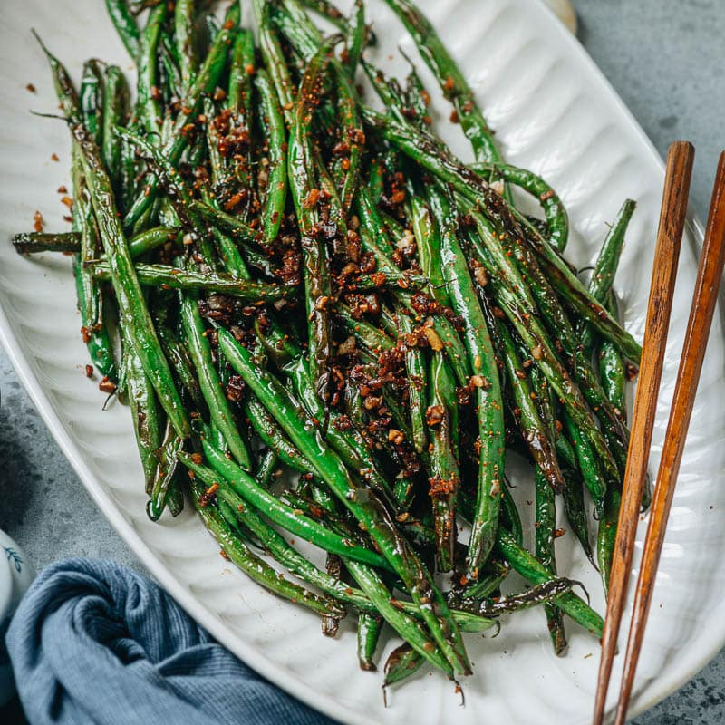

Garden Green Beans

Description
Of course fresh garden picked is always good. We served them with halibut.
Ingredients
- 1 pound fresh green beans, trimmed
- 3 tablespoons olive oil
- 3 tablespoons freshly grated Parmesan cheese
- 2 tablespoons white wine vinegar
- 1 pinch salt
- 1 pinch ground black pepper
Steps
- Place a steamer insert into a saucepan and fill with water to just below the bottom of the steamer. Bring water to a boil. Add green beans, cover, and steam to your desired degree of tenderness, about 5 minutes.
- Transfer steamed green beans to a serving bowl. Add olive oil, Parmesan cheese, white wine vinegar, garlic, salt, and pepper; toss until evenly coated. Let stand for 10 minutes.
- Serve and enjoy!